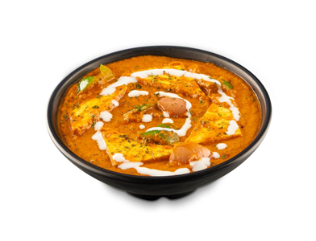

MyFoodArea


Order Now
HEALTY FOOD IS A BASIC NEED & NOT LUXURY Take Punjabi is the 1st, Indian fast food Quick and Home Service Restaurant that primarily sells Parathas made from Whole Wheat, Paratha Subs, Salads & Tray Meals. It is fastest growing single brand that serves Parathas in fast food style. It is owned and operated by unemployed house women. The concept behind the birth of Take Punjabi is to serve the clients with healthy, tasty & nutritious eco-meal prepared from Whole Wheat. Each Paratha at Paratha Express are hand tossed with love & garnished with our secret spices. Within few years take Punjabi will changed the definition of fast food. Now the fast food is healthy, tasty nutritious only at Take Punjabi. Beautiful, warm, living object looked so fragile, so delicate, that if you touched it with a finger it would crumble and fall apart. Seeing this has to change a man. Where ignorance lurks, so too do the frontiers of discovery and imagination